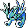
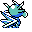

#117
Seadra
Water
Capable of swim- ming backwards by rapidly flapping its wing-like pectoral fins and stout tail
Base stats Total 395
HP55
Attack65
Defense95
Speed85
Special95
Details
- Species
- Dragon
- Height
- 3'11"
- Weight
- 55.0 lb
- Catch rate
- 75
- Base exp
- 155
- Growth
- Medium Fast
Level-up moves
LevelMoveType
StartBubbleWater
StartSmokescreenNormal
Lv 7LeerNormal
Lv 9Water GunWater
Lv 14DisableNormal
Lv 23SlamDragon
Lv 25BubblebeamWater
Lv 26WaterfallWater
Lv 29Dragon ClawDragon
Lv 36Hydro PumpWater
Where to find
TM / HM
TM06 ToxicTM09 Take DownTM10 Double-EdgeTM11 BubblebeamTM12 Water GunTM13 Ice BeamTM14 BlizzardTM15 Hyper BeamTM31 MimicTM32 Double TeamTM34 BideTM39 SwiftTM44 RestTM50 SubstituteHM03 Surf